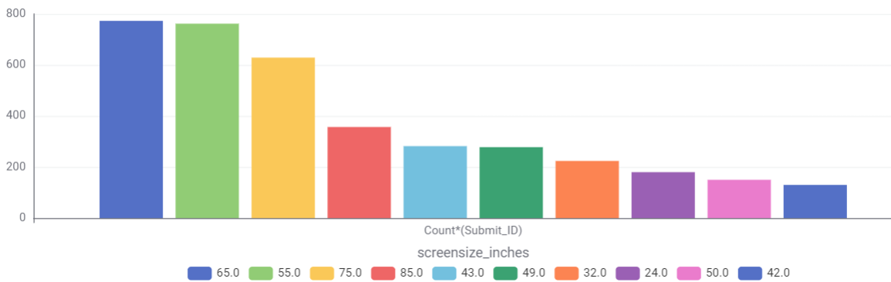

TV Energy Insights: Data Story
Using the cleaned dataset of currently available televisions, this page shows that screen size alone does not reliably predict annual running cost — some larger LED models cost more to run than smaller OLED or QLED models of similar size. The visualisation breaks running cost down by display technology so shoppers can see where the real cost differences come from, then highlights a small set of currently available models that offer the best running-cost value at common screen sizes.
Chart 1: What TV technologies are most common?

Most common TV technology in Australia is LCD(LED).
Chart 2: What screen sizes are most frequent?

Most common TV technology in Australia is LCD(LED).
Chart 3: What TV technologies are most common?
Most common TV technology in Australia is LCD(LED).
Chart 4: What TV technologies are most common?
Most common TV technology in Australia is LCD(LED).
Chart 5: What TV technologies are most common?
Most common TV technology in Australia is LCD(LED).
Chart 6: What TV technologies are most common?
Most common TV technology in Australia is LCD(LED).
Chart 7: What TV technologies are most common?
Most common TV technology in Australia is LCD(LED).